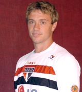
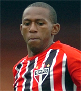
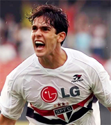
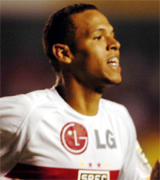
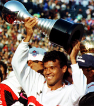

ídolos
| Ídolos |
Jogador |
Posição |
Motivo |
 |
Rogerio Ceni |
Goleiro |
Maior goleiro artilheiro do mundo, atleta exemplar, campeão mundial com a Seleção Brasileira, bicampeão mundial e da Libertadores, tricampeão brasileiro, capitão e líder incondicional do esquadrão tricolor, Rogério Ceni é a síntese do espírito são-paulino: competente, exigente, obstinado e vencedor. |
|  |
Lugano |
Zagueiro |
Desconhecido, sua contratação não fora aprovada pelo então técnico, Oswaldo de Oliveira, passando a ser conhecido como "O Jogador do Presidente". Aos poucos, jogando com uma grande vontade e espírito de luta, Lugano conquistou a torcida são-paulina. |
 |
Cafú |
Lateral |
Foi o lateral-direito que mais fez gols no São Paulo, não só pela excelência do seu futebol e do seu preparo físico, como também porque exerceu mais funções ofensivas do que outros, em atendimentos aos esquemas táticos mais modernos. |
|  |
Mineiro |
Volante |
Gaúcho de Porto Alegre, Mineiro se consagrou no Tricolor pelo gol sobre o Liverpool, na final do Mundial de Clubes de 2005. Seu futebol, fôlego e vigor, porém, já bastariam para enquadrá-lo entre os melhores de todos os tempos. Exímio marcador, do gênero incansável, ainda arriscava avanços ao ataque e chutes de longas distâncias. |
|  |
Kaka |
Meio-Campo |
Autêntica jóia tricolor, Kaká foi lapidado desde criança para ser uma verdadeira potência entre os atletas. Bom caráter, inteligente, forte, ágil, veloz... Poucas são as características positivas a um jogador que ele não possui. Em suas primeiras partidas no Tricolor, de cara foi campeão, marcando dois gols na final da competição. Foi Campeão do Mundo em 2002 pela Seleção e escolhido o Melhor do Mundo pela FIFA, em 2007. |
> |
Raí |
Meio-Campo |
Veio do Botafogo de Ribeirão Preto em 87 e demorou pouco para brilhar. Tinha o estigma de jogador lento. Tornou-se o capitão e virou uma espécie de símbolo do time que ganhou quase tudo em 91, 92 e 93. Raí jogou na França e voltou ao tricolor em 1998 para encerrar sua carreira em 2000. |
|  |
Luis Fabiano |
Atacante |
Goleador. Luís Fabiano é a definição exata da palavra, pois é 3º maior artilheiro da história do São Paulo, com 212 gols. Deixou o clube em 2004, mas retornou brevemente ao Morumbi com a Seleção Brasileira, em 2007, quando foi decisivo e comemorou os gols da vitória do Brasil sobre o Uruguai no emblema são-paulino! Recontratado em 2011, com uma festa inesquecível no estádio do Tricolor, Luis Fabiano continou a marcar muitos gols, fato que o levou a assumir a artilharia máxima do clube em vários critérios, como jogos de Campeonato Brasileiro (108 gols), de Libertadores (14), em jogos internacionais (21), de mata-mata (52) e em jogos contra os grandes clubes do Brasil (77). Em 2015, se despediu dos são-paulinos com gol (claro) e lágrimas sobre o escudo do Tricolor no Morumbi. |
|  |
Müller |
Atacante |
Muller foi um jogador marcante no São Paulo, com participação fundamental nos jogos que nos deram os dois primeiros títulos mundiais que conquistamos. Fez uma jogada excepcional contra o Barcelona, em 1992, dando um verdadeiro nó no beque espanhol antes de cruzar para Raí empatar o jogo de barriga; e fez o gol da vitória contra o Milan em 93, de costas, calcanhar, sobrecoxa, barriga de perna ou algo que o valha - e que valeu muito. Foi importante também em várias outras conquistas, graças não só a uma diferenciada velocidade, mas, principalmente, a uma inteligência incrível, dentro do campo. Disputou três Copas do Mundo (1986 a 1994), as duas primeiras como titular. |
 |
Serginho Chulapa |
Atacante |
Era insuperável quando partia para o gol. Desengonçado, parecia que ia cair, mas nunca caía. Recuperava o equilíbrio durante a corrida e marcava. Era gol na certa. Usava os braços e o corpo também com uma habilidade incrível. Bola na sua esquerda era gol, na direita meio gol. Alto, fazia ainda muitos gols de cabeça. Era bom também para bater faltas e pênaltis. Tinha uma empatia especial com a torcida porque sabia provocar os adversários, quer com declarações fora de campo ou com atitudes "consagradoras". A torcida adorava a mistura do jogo eficiente com o comportamento malandro. É o maior artilheiro da história do SPFC. Não foi a Copa de 78 por causa de uma suspensão por 14 meses, mas centroavante titular do Brasil na de 82. |
 |
Muricy Ramalho |
Técnico |
Prata da casa, Muricy foi auxiliar de Telê Santana nos anos 90. Em 1994 comandou o Expressinho, campeão da Copa Conmebol daquele ano. Com o afastamento do Mestre assumiu o time principal, sendo campeão da Copa Master Conmebol de 1996. Saiu em 1997, retornando 9 anos depois para levar o São Paulo FC a um feito inédito na história do clube - um tricampeonato seguido, com um sabor todo especial por ser um Tricampeonato Brasileiro (2006, 2007 e 2008). Com campanhas épicas, variando de conquistas seguras obtidas com várias rodadas de antecipação à façanha de vencer um campeonato após matemáticos lançarem apenas 1% de chances de triunfo. Retornou ao clube nos braços da torcida em setembro de 2013, quando o time estava entre os piores colocados do Campeonato Brasileiro. Afastou o risco de rebaixamento no torneio nacional e levou o time à semifinal da Copa Sul-americana. Em 2014, comandou a equipe no vice-campeonato do Brasileiro. Afastou-se em abril de 2015 por problemas de saúde. |
 |
Tele Santana |
Técnico |
Este espaço é pouco para descrever tudo o que este grande técnico fez pelo clube. Telê teve duas passagens pelo Tricolor (1973 e 1990-1996), e é o técnico mais vencedor da história são-paulina. Ao todo foram dez títulos oficiais conquistados, incluindo os bicampeonatos da Taça Libertadores da América e do Mundial Interclubes, que elevaram o nome do São Paulo FC a um patamar nunca antes atingido. Eterno ídolo da torcida, que até hoje canta seu nome nos jogos do time, sua marca registrada era a disciplina imposta a seus comandados. Tudo em prol da perfeição técnica, alcançada mediante treinamento constante e rigidez de conduta. |